Desktops
Some of my PCs that I put together over the years. There are several which aren't included here, but I couldn't fine pictures of them.
Desktop #5
Starting from newest to oldest, this is my most recent PC. Sporting a Ryzen 5 5600x, 16GB of DDR4 Memory and an RX 6600 this PC is capable of anything I throw at it. As much as I love this PC, I still use my laptop for most things since the portability of it makes it more preferable to me.
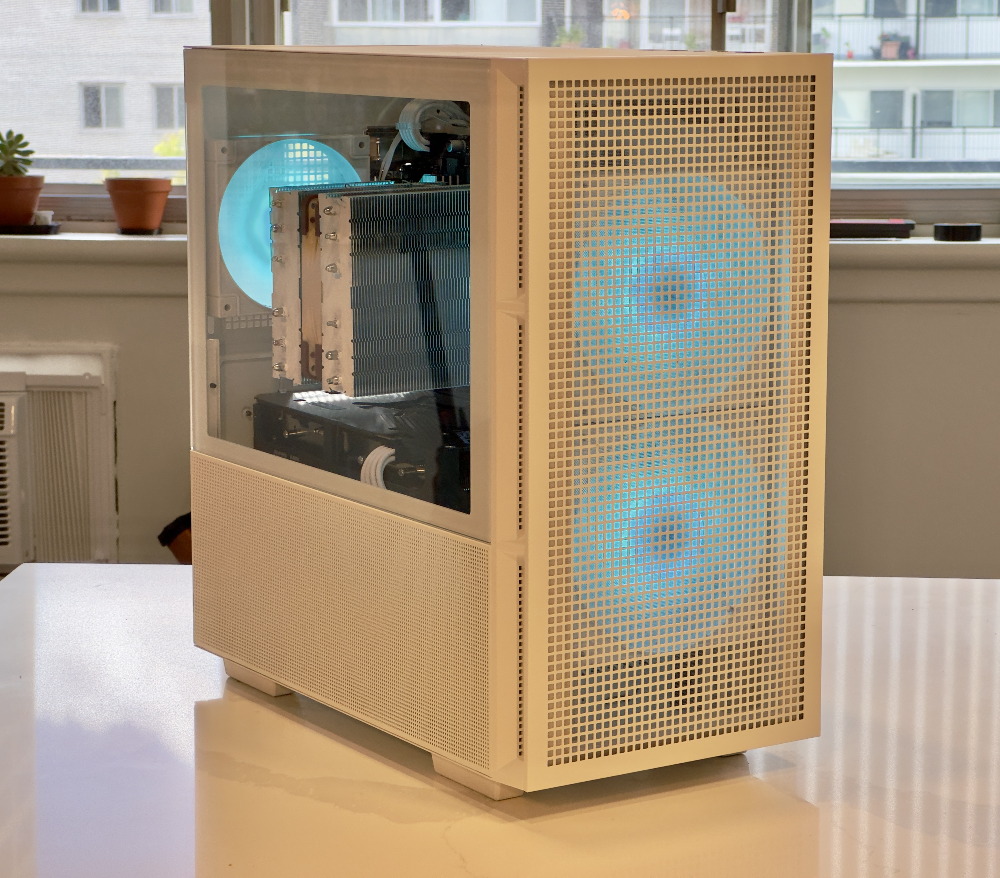 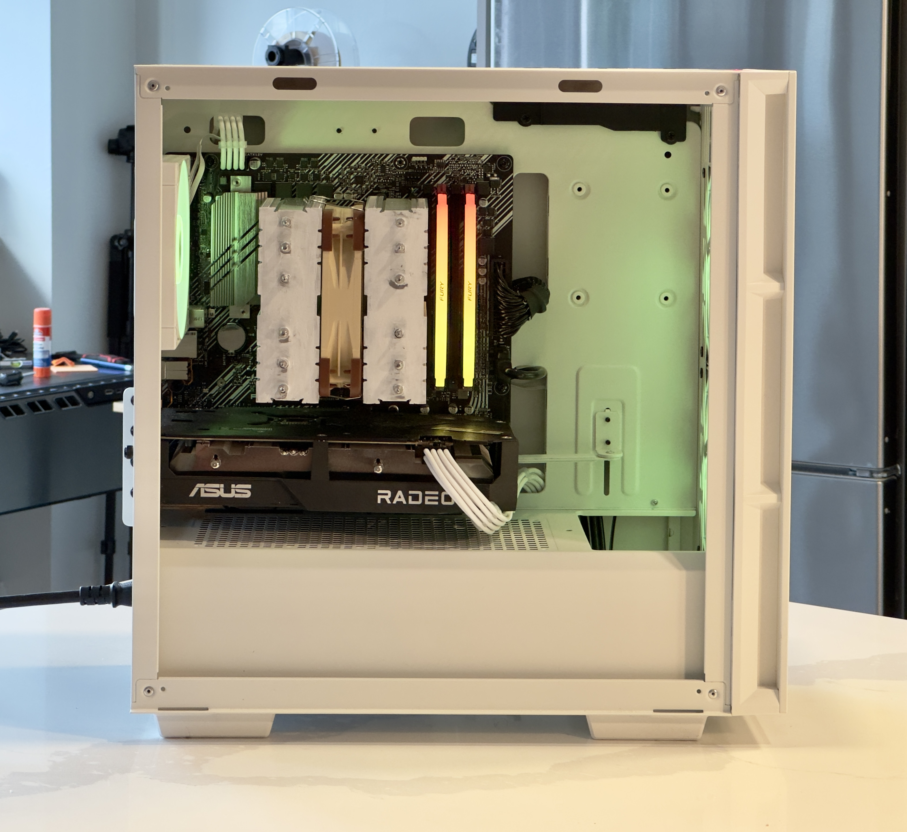
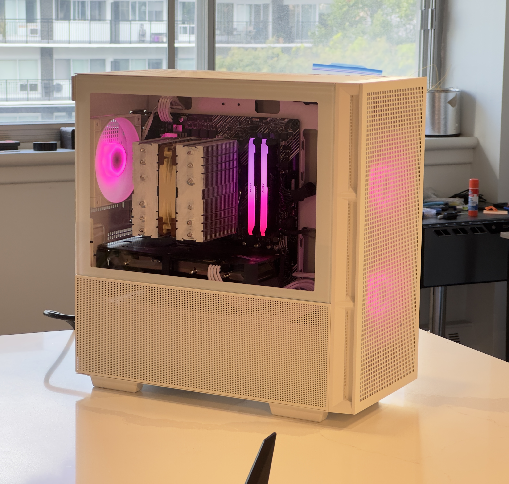
Desktop #4
The most special PC of them all! This machine contains an i7-6800k which is an older CPU at this point, but it's an extreme edition processor! This CPU is anything but standard as it uses the LGA 2011 socket, and has 6 cores and 12 threads, which for it's time (2016), it's really impressive! Along with it, the PC contains a GTX 1060 6GB GPU, and 16GB of DDR4 Memory. Side note: The ram sticks were populated in the wrong slots in the pictures but have since been moved.
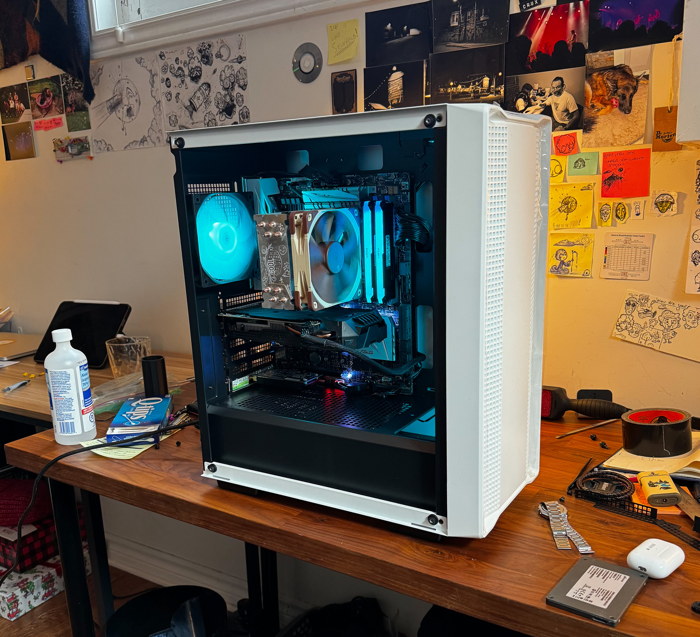 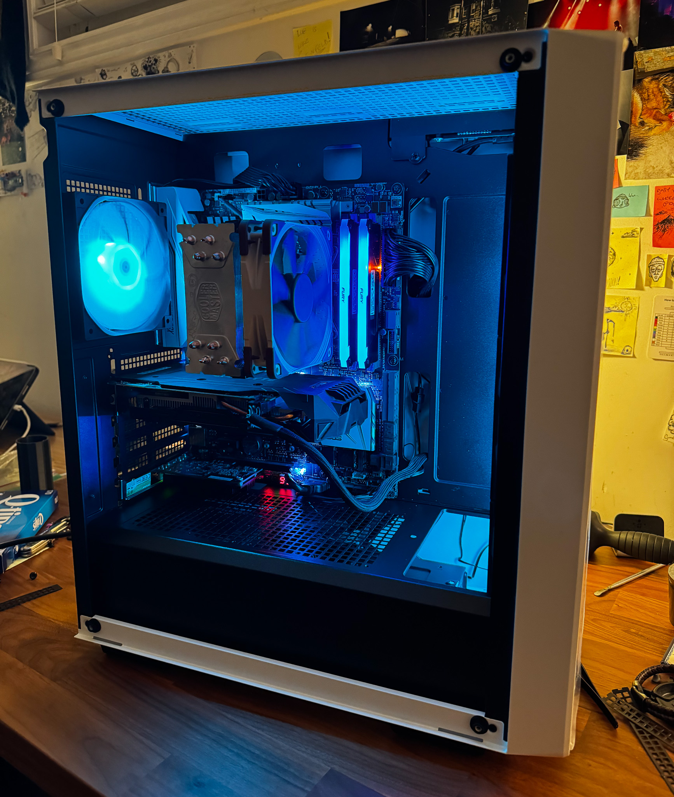
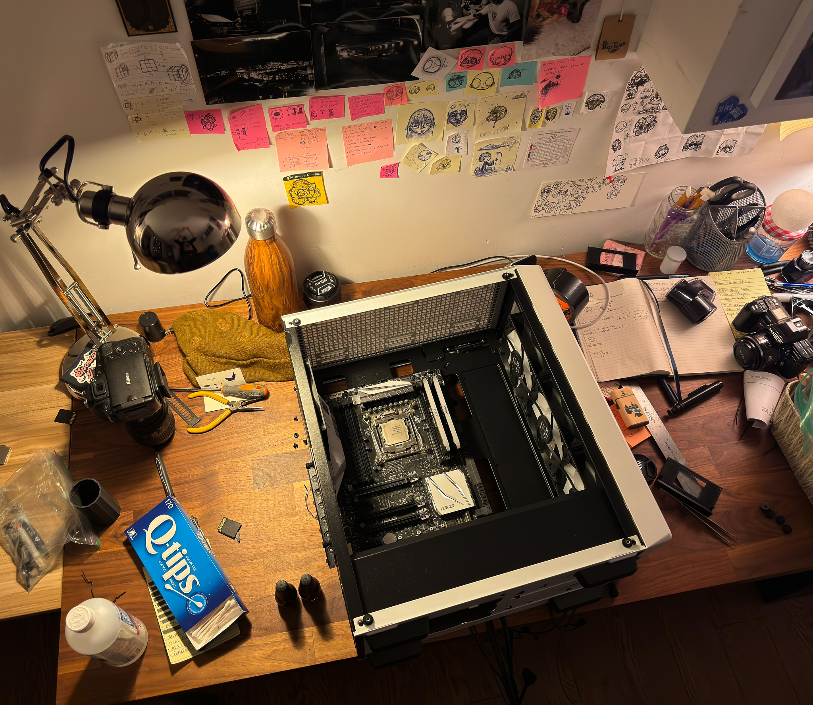 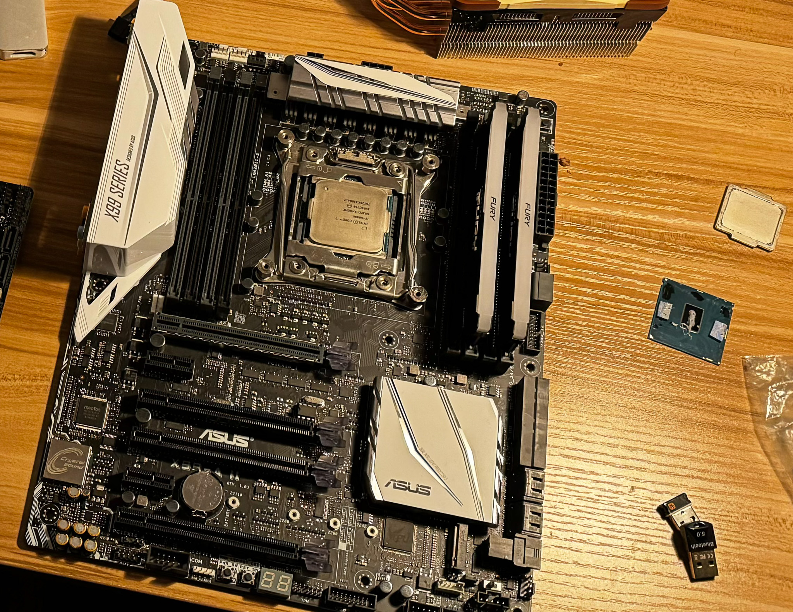
Desktop #3
An older PC at this point, but I really liked putting it together! The PC looks really clean thanks to the case which was from Fractal (Define C?). The CPU was an i5 7400 and the GPU was a GTX 750ti.


Desktop #2
One of my older projects, but one I was really proud of. I put this together a long time ago and I really loved this machine. This computer had an i7 3770, 12GB of DDR3 Memory and a GTX 970. I used plasti-dip to paint the Memory modules white to get a cleaner "aesthetic" since the modules were originally a bright red.


Desktop #1
This PC is also on the older side. Rocking an i5 3570k, and a GTX 660, it's a bit dated, but worked really well during it's prime!
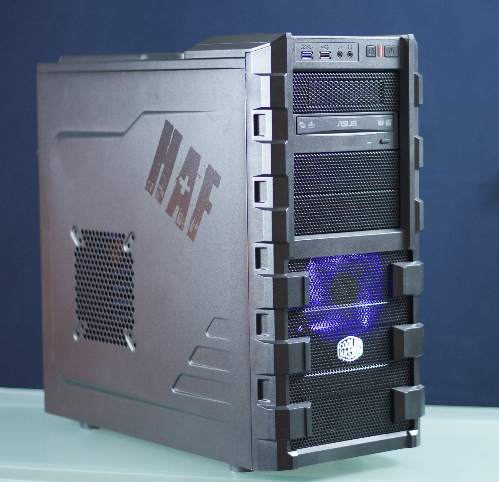 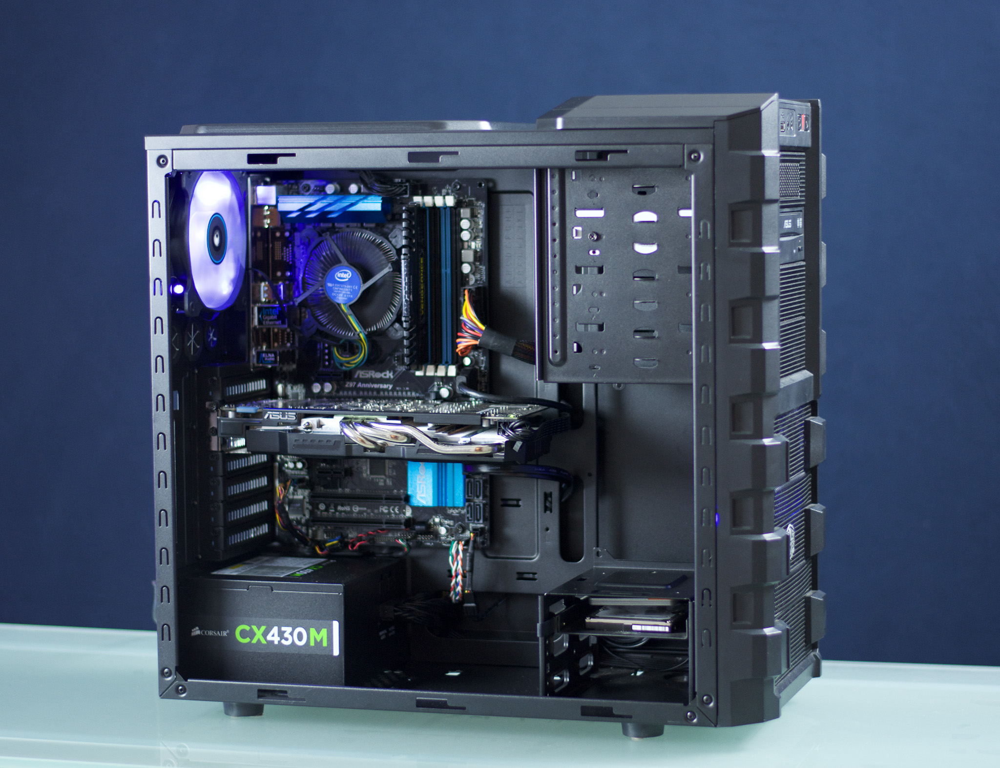
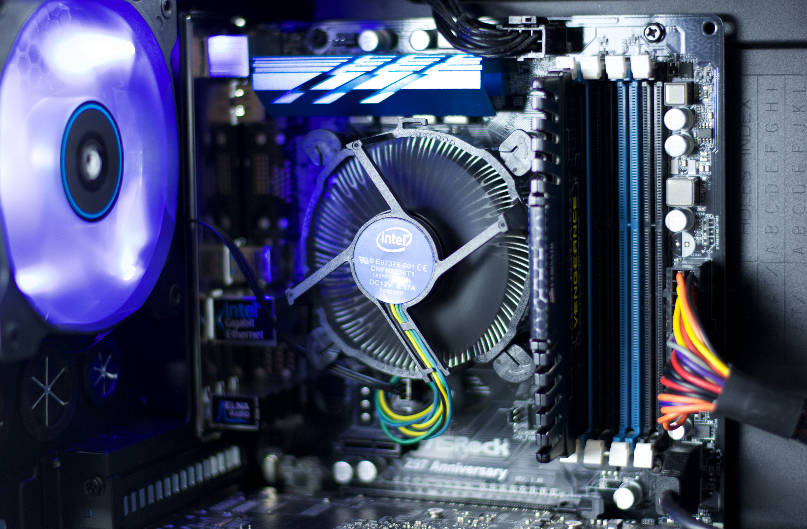 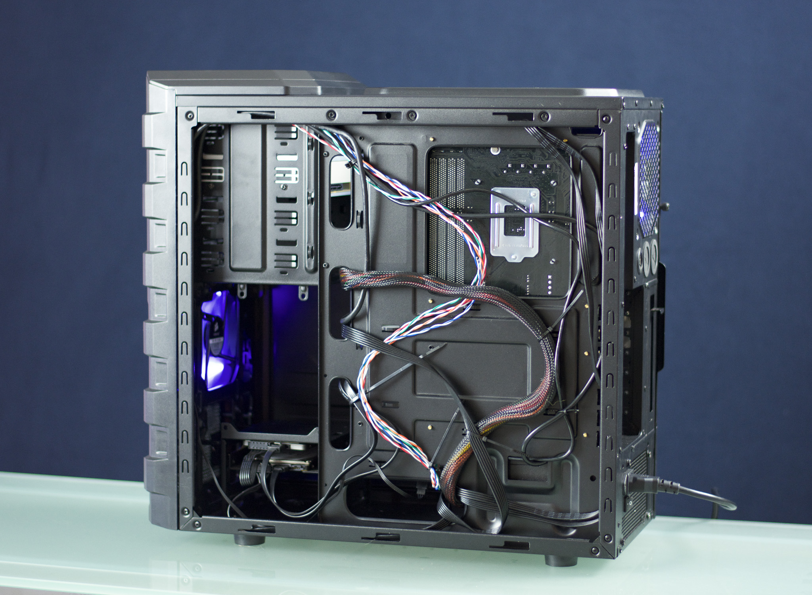
My First Desktop
The first desktop I put together had an AMD FX 6300 which I really loved. It was definitely worse than the competition at the time, but it was a really good price and it was my first CPU. It was also the CPU that introduced me to the world of overclocking, and I managed to get the CPU running at 4.3GHz which was a nice boost from the stock 3.5GHz. Unfortunately, I wasn't able to find a picture of it, but I still wanted to leave a spot here commemorating it.